Joint definition of cell types from multiple scRNA-seq datasets
Yichen Wang, Joshua Sodicoff and Joshua Welch
2024-10-01
Source:vignettes/articles/Integrating_multi_scRNA_data.rmd
Integrating_multi_scRNA_data.rmdThis article is an general walkthrough of all main LIGER functionalities. We demonstrate the usage of the rliger package in the style of the R Console, which can be accessed through an R development environment (e.g., RStudio) or directly from the R command line.
LIGER relies on iNMF (integrative Non-negative Matrix Factorization, Welch, JD 2019) to jointly factorize single-cell data into interpretable low-dimensional representations, and integrated clustering can be obtained upon aligned cell factor loading. The package also provides a variety of utilities for visualization and analysis of clustering, gene expression across datasets, comparisons of cluster assignments and etc.
Setup the session
To get started, please make sure that rliger is successfully installed in R, as guided on the Installation help page. Then, we load the package to the current R session, together with a few other helpful packages. dplyr has been widely used for data table manupulation and is famous for its unique user-friendly syntax. cowplot is a package that provides a simple and consistent way to combine multiple plots into a single figure.
Load the data
In this tutorial, we will be integrating data from control and interferon-stimulated PBMCs from Kang et al, 2017. The data can be found in the Gene Expression Omnibus, Series GSE96583. This dataset was originally in the form of output from the 10X Cellranger pipeline. In this tutorial, we prepared a downsampled version of the data.
After downloading the archive file (.tar.gz) to your working directory, we need to extract the content to a folder. You can use any unzip tool available on your computer to extract the content. For platform without a graphical UI, operate the following command in its terminal (not in R).
This will result you a folder called pbmc_ifnb_example
in your working directory, with inner structure like below:
pbmc_ifnb_example
├── ctrl
│ └── outs
│ └── filtered_feature_bc_matrix
│ ├── barcodes.tsv.gz
│ ├── features.tsv.gz
│ └── matrix.mtx.gz
└── stim
└── outs
└── filtered_feature_bc_matrix
├── barcodes.tsv.gz
├── features.tsv.gz
└── matrix.mtx.gzNow we can start to work in R to have the two datasets loaded. When doing your own hands on, make sure to replace the path to the folder with the actual path on your machine.
# Make sure to modify the following path to reflect the exact location of the folder
pathToFolder <- "pbmc_ifnb_example"
rawList <- read10XRNA(pathToFolder)
pbmcLiger <- createLiger(rawList, organism = "human")
pbmcLiger## An object of class liger with 13999 cells
## datasets(2): ctrl (6548 cells), stim (7451 cells)
## cellMeta(7): dataset, barcode, nUMI, ..., hemo
## varFeatures(0):
## dimReds(0):The loaded raw data rawList is a list object containing
two matrices for the “ctrl” and “stim” datasets. Then
createLiger() will take the list of all datasets to be
integrated as an input and construct the liger object.
Convenience function for loading the example object
For convenience, we have also prepared the pre-processed data which
are ready to use, easily loaded with importPBMC().
# This is not run at rendering time.
pbmcLiger <- importPBMC()For creating a liger object from raw counts data or any other types of source (e.g. import cellranger H5 files, convert from Seurat, SingleCellExperiment, or even H5AD file), please refer to the detailed tutorial for importing data.
Quality control
It is always the best practice to check the quality control metrics
of the scRNAseq data before performing any other processing, in order to
rule out cells of poor quality that might affect the downstream
analysis. rliger by default have the most frequently used
metrics calculated when createLiger() is called, with the
following variables accessible in cellMeta(pbmcLiger) or
with the $ operator:
-
pbmcLiger$nUMI: The sum of UMI counts for each cell. -
pbmcLiger$nGene: The number of genes detected in each cell. -
pbmcLiger$mito: The percentage of mitochondrial genes detected in each cell. -
pbmcLiger$ribo: The percentage of ribosomal genes detected in each cell. -
pbmcLiger$hemo: The percentage of hemoglobin genes detected in each cell.
The function plotTotalCountViolin() and
plotGeneDetectedViolin() show the density distribution of
nUMI and nGene, respectively.
plotNUMI <- plotTotalCountViolin(pbmcLiger, dot = TRUE)
plotNGene <- plotGeneDetectedViolin(pbmcLiger, dot = TRUE)
cowplot::plot_grid(plotNUMI, plotNGene, ncol = 2)
For plotting the mitochondrial gene expression percentage, please use the following command:
plotCellViolin(pbmcLiger, "mito", groupBy = "dataset", dot = TRUE)
It happens that there is no mitochondrial gene detected in
the datasets we use for this tutorial. Users seeing such result
with their own data need to pay attention to species setting for
identifying the mitochondrial genes and rerun
runGeneralQC() (click to see usage). If there are
mitochondrial genes detected, it is recommended to filter out cells with
high mitochondrial gene expression percentage, as they are likely to be
dead or dying cells.
There are two approaches of filtering genes and cells in a liger
object. The first is to use removeMissing() function, which
mainly removes non-expressing genes and cells with no counts. This
function also allows removing genes that are expressed in too few cells
(argument minCells) and cells that express too few genes
(argument minFeatures). The following command removes cells
that express less than 200 genes.
pbmcLiger <- removeMissing(pbmcLiger, minFeatures = 200)The second way is to use R’s native matrix subsetting syntax and use
the cellMeta(pbmcLiger) variables which are accessible with
$ operator. The following command
- keeps cells with total counts greater than 500
- keeps cells with more than 200 detected genes
- keeps cells with mitochondrial gene expression percentage less than 5%
pbmcLiger <- pbmcLiger[, pbmcLiger$nUMI > 500 & pbmcLiger$mito < 5]Preprocess
Before we can run iNMF on our datasets, we must run several preprocessing steps to normalize expression data to account for differences in sequencing depth and efficiency between cells, identify variably expressed genes, and scale the data so that each gene has the same variance. Note that because nonnegative matrix factorization requires positive values, we do not center the data by subtracting the mean. We also do not log transform the data.
pbmcLiger <- pbmcLiger %>%
normalize() %>%
selectGenes() %>%
scaleNotCenter()For gene selection, we use a customized approach that selects gene for each dataset separately and take the union (or intersection) at last. The selection for each dataset is based on a variance threshold and thus the number of genes selected can be different for each dataset. Users may see the message log from the run and decide whether to raise or lower the threshold for each dataset to obtain optimal number of genes being selected.
Integration with Joint Matrix Factorization
Joint factorization
We are now able to perform iNMF on the scaled datasets. The key
parameter for this analysis is k, the number of ranks each
dataset is factorized into (analogous to the number of principal
components in PCA). In general, we find that a value of k
between 20 and 40 is suitable for most analyses and that results are
robust for choice of k. Because LIGER is an unsupervised,
exploratory approach, there is no single “right” value for
k. In practice, users choose k from a
combination of biological prior knowledge and other information. A
higher k value might be considered when there are more
distinct composition expected from all datasets involved. A too-high
k value might result in splitting a distinct cell
population into unnecessary subpopulations, while a too-low
k value might not be sufficient enough for separating a
distinct cell population apart from others. For this tutorial, we set
k = 30.
pbmcLiger <- runIntegration(pbmcLiger, k = 30)Starting from rliger 2.0.0, we use an optimized implementation of iNMF. Here we deprecated the parameter
threshwhich stands for a convergence detecter in order to speed up each algorithm iteration by omitting the calculation of objective error.
The factorization yields several lower dimension matrices:
- an \(H\) matrix for each dataset, representing the factor loadings for each cell. A factor can be regarded as a metagene.
- the \(W\) matrix of shared gene loadings for each factor.
- A \(V\) matrix for each dataset, standing for the dataset-specific gene loadings for each factor.
Please refer to liger object documentation for how to access them.
The time consumption of this step is linearly dependent of the size
of the datasets, in terms of number of cells, number of variable genes
selected, and the value of k. The implementation supports
OpenMP multi-threading on non-Apple-Sillicon machines, and therefore
using a machine with a number of cores allocated and setting argument
nCores to a >1 integer helps speeding it up. While
nCores setting is not applicable on Apple Sillicon
machines, the benchmarking there still shows comparable performance.
Factor alignment
As introduced above, the \(H\) matrices for each dataset can be treated as low-dimensional representation of cells and can be used for clustering. These matrices are interpretable in a way that each factor can be considered as a metagene, cell identity program, biological activity program and etc. We need one last step to align the factor loading values across datasets, so that cells voted to be of the same “type” by the factors will have a aligned loading values across datasets, before calling a clustering algorithm or generating embeddings for visualization.
From rliger 2.1.0, we introduce a newly developed cell factor loading alignment method.
pbmcLiger <- alignFactors(pbmcLiger, method = "centroidAlign")This method treats the factor loadings in each cell as soft-clustering probabilities and therefore can yield centroids for each cluster per dataset. We then linearly transform the scaled \(H\) matrices by moving the centroids of the same cluster from different datasets towards each other. This method is benchmarked to show much better overall performance than the previous quantile normalization method. While having comparable power in removing batch effect, the centroid alignment method has much improved ability to conserve biological information, especially when uncommon cell types are present in part of the datasets.
Running conventianal quantile normalization
Quantile normalization relies on the selection of a reference dataset and matches the quantiles of the factor loading across a cluster in each dataset to that of the reference dataset. This method is powerful when the same cell types are expected to be present in all datasets (e.g. the PBMC datasets demonstrated in this tutorial) and provides strong batch effect removal. However, it may not be optimal when the cell types are not shared across datasets or when the cell types are not evenly distributed across datasets.
pbmcLiger <- alignFactors(pbmcLiger, method = "quantileNorm")The factor loading alignment produces matrix \(H.norm\), which is considered as the final low-dimensional representation that integrates the datasets together, which can be then used for clustering or visualization.
Clustering
We run Leiden community detection on SNN graph inferred from the aligned cell factors loading, an approach commonly used for single-cell data. The Leiden algorithm excels at merging small clusters into broad cell classes and thus may be more desirable in some cases than the maximum factor assignments.
pbmcLiger <- runCluster(pbmcLiger, resolution = 0.3)Starting from rliger 2.0.0, cluster labeling will be stored in cell metadata, which can be accessed with
cellMeta(pbmcLiger). Use argumentclusterNameinrunCluster()to specify unique variable names for the result so that multiple cluster labeling variables can be stored at the same time.
Visualize the integration
To visualize the clustering of cells, we can project the aligned cell factors to 2D space. LIGER supports both UMAP and t-SNE for this purpose.
pbmcLiger <- runUMAP(pbmcLiger, minDist = 0.3)Starting from rliger 2.0.0, the slot for storing dimensionality reduction matrices will be renamed to “dimReds”. It will be a list that can hold multiple low dimensional matrices that match to all datasets by cell identifiers. Users can access individual matrix with
dimRed(object, "name"). Use argumentdimredNameinrunUMAP()(orrunTSNE()to specify unique names for the UMAP/tSNE result so that it allows storing multiple low-dimensional representation matrices at the same time.
plotByDatasetAndCluster() returns two graphs, generated
with the UMAP in the previous step. The first colors cells by dataset of
origin, and the second by cluster as determined by previous clustering
step. The plots provide visual confirmation that the datasets are well
aligned and the clusters are consistent with the shape of the data as
revealed by UMAP.
The two subplots can individually be generated with
plotDatasetDimRed() and plotClusterDimRed(),
respectively.
plotByDatasetAndCluster(pbmcLiger)
Sometimes it is also important to have a look at the cluster
distribution within each dataset, because the UMAP plot colored by
dataset can be too messy when different colors are expected to be mixed
up. This can be achieved by running plotClusterDimRed()
with setting splitBy = "dataset". Additionally, we can make
a contour density plot of the dimensionality reduction to further assist
interpreting the distribution.
clusterUmapList <- plotClusterDimRed(pbmcLiger, splitBy = "dataset", title = names(pbmcLiger))
densityList <- plotDensityDimRed(pbmcLiger, splitBy = "dataset", combinePlot = FALSE)
# Use cowplot's functionality to bring individual plots in the list together
plot_grid(plotlist = c(clusterUmapList, densityList), align = "hv")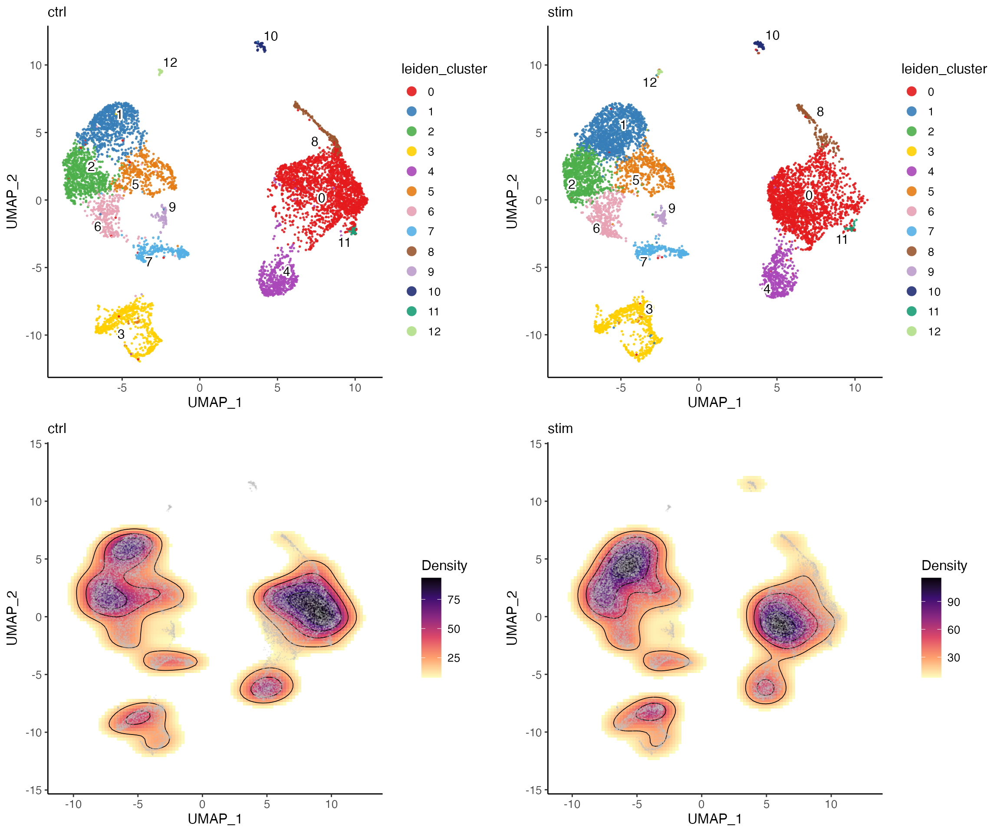
From the plots above, we can visually see that there is a location shift at cluster 0. But otherwise the density pattern in most of the parts is very similar between the two datasets, which is a good sign of successful integration.
Explore and interpret the factors
Non-negative matrix factorization approach is known for its
interpretability of the information from the low dimensional result. To
directly study the impact of factors on the clustering and determine
what genes load most highly on each factor, we use the
plotGeneLoadings() function, which returns plots of factor
loading on the dimensionality reduction and highly loaded genes by
dataset for each factor. Knowing the highly loaded gene of each factor
largely helps helps understanding what biological processes are driving
the clustering and guides the annotation of cell types. The
dataset-specific gene loading further helps to understand the
differences between datasets.
In this example, we show the 11’th factor, which is highly loaded in cluster 7. From the top loaded genes, we can easily identify that cluster 7 should be considered as NK cells given the context of PBMCs, as GNLY and NKG7 are well known markers for NK cells. From the top loaded genes in the “stim” dataset (interferon stimulated), we can also observe IFI6 (interferon-alpha inducible protein 6), which agrees with the biological context of the experiment.
factorMarkers <- getFactorMarkers(pbmcLiger, dataset1 = "ctrl", dataset2 = "stim")
plotGeneLoadings(pbmcLiger, markerTable = factorMarkers, useFactor = 11)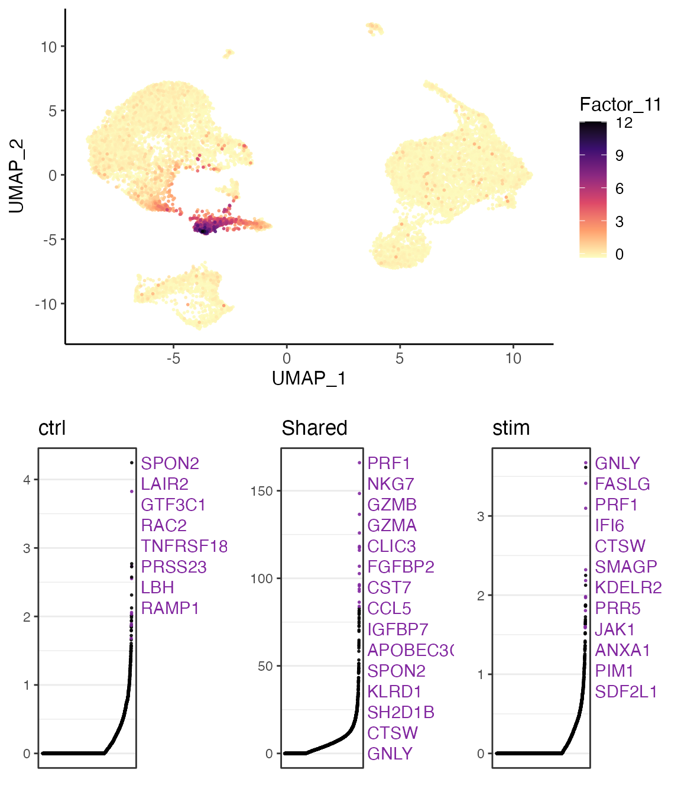
Explore cell type proportions
rliger provides a good number of functions that visualize the cell type proportion within each dataset, which helps understanding the compositional change across conditions of interests, also known as a differential abundance analysis.
Pie charts
Here we show a pie chart layered by dataset and sliced by cluster proportion, allowing us to directly see the proportion of each cluster within each dataset while being able to compare the differential abundance of clusters across datasets.
plotProportionPie(pbmcLiger)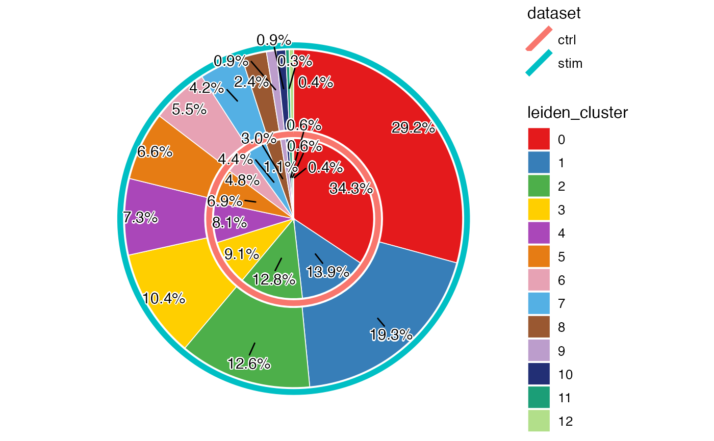
From above, we can clearly see a difference of proportion in cluster 0 and 1, between the two datasets. Combined with what we observed earlier from the UMAP, this indicates that the interferon stimulation may have an impact on the composition of the PBMCs, especially on the cell type that cluster 0 represents.
Box plots
In the scenario of a more complicated study design, where different
biological conditions consist of multiple samples, it is more
informative to visualize the proportions grouped by the condition
covariate. The function plotProportionBox() is designed to
group the proportion of each cluster within each sample by condition so
that we can see the differential abundance of clusters across
conditions.
In the example dataset we show in this tutorial, we only have one sample for each condition. Therefore, to demonstrate how this function works, we need to manually divide each dataset into three pseudo-replicates and regard the original dataset covariate as the condition variable.
In real-life analysis, users should use real sample variable
at sampleBy and real condition variable at
conditionBy.
pbmcLiger$pseudo_replicate <- factor(sprintf(
fmt = "%s_%s",
pbmcLiger$dataset,
sample(1:3, ncol(pbmcLiger), replace = TRUE)
))
print(table(pbmcLiger$dataset, pbmcLiger$pseudo_replicate))##
## ctrl_1 ctrl_2 ctrl_3 stim_1 stim_2 stim_3
## ctrl 2247 2086 2215 0 0 0
## stim 0 0 0 2504 2391 2556
plotProportionBox(pbmcLiger, conditionBy = "dataset", sampleBy = "pseudo_replicate")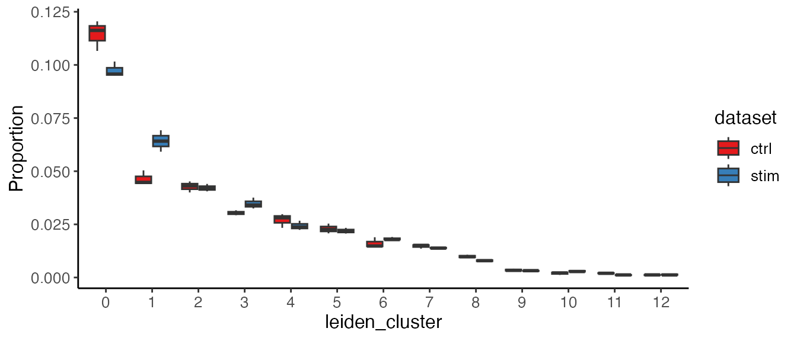
For the boxplot, given the fact that there are always some clusters
of small size and the proportions they take can be squeezed in the plot
by the larger clusters. To get over this, we can use option
splitByCluster = TRUE to generate the plot of the same
information for each cluster. The return value is now a list of plots,
and we will bring them together with cowplot’s plot_grid()
function.
propBoxList <- plotProportionBox(
pbmcLiger,
conditionBy = "dataset",
sampleBy = "pseudo_replicate",
splitByCluster = TRUE
)
# Again, use cowplot's functionality to bring individual plots in the list together
plot_grid(plotlist = propBoxList)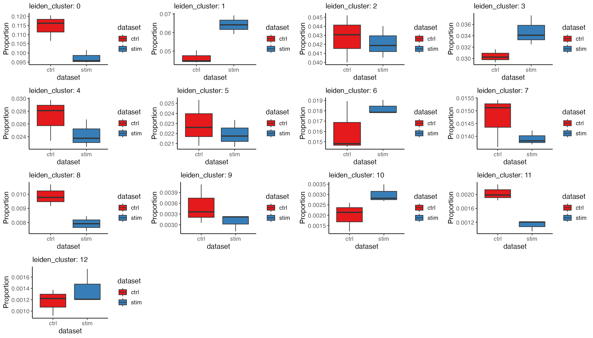
Please also checkout other functions like
plotProportionDot() and plotProportionBar()
that express similar information in different ways.
Differential expression
Starting from rliger 2.1.0, we move the default differential
expression test method to pseudo-bulk test performed with DESeq2. This is
generally tested to be more robust when comparing across batches than
wilcoxon rank-sum test that we previously used. We provide two
functions, runMarkerDEG() and runPairwiseDEG()
for different purposes. Please click on the function name to be
redirected to detailed usage reference.
-
runMarkerDEG()always performs tests in a one-vs-rest manner, which is suitable for marker identification. Cluster markers can be identified easily, while dataset-specific markers can be identified within each cluster. See example below. -
runPairwiseDEG()performs test between two specific groups of cells, either specified by metadata variable or user customized cell indices with great flexibility. Comparison between two conditions can be done within each cluster. See example below.
Pseudo-bulk method works optimally when real replicate information is
available, i.e. a pseudo-bulk should better be created with cells that
belong to the same biological replicate. We recommend inserting such
metadata information into the object beforehand and supply the variable
name to argument useReplicate. Most of the time, the
variable "dataset" is used for this purpose if users create
the liger object with each matrix
representing a single real replicate.
Marker detection for each cluster
For identifying cluster markers, we can simply call the function with
setting conditionBy = "leiden_cluster" to allow the test to
be built on the cluster labels we just got.
# Run the pseudo-bulk DE test for cluster marker detection
clusterMarkerStats <- runMarkerDEG(pbmcLiger, conditionBy = "leiden_cluster")Manipulate marker tables
The returned object is a data.frame object containing
all the statistics for all clusters. Split by "group"
column, each part of the table represents the result of DEG test
comparing the cluster that the "group" column indicates
against all other clusters. We recommend using package dplyr
for further data manipulation.
# Show the top 10 markers ranked by adjusted p-value and logFC for cluster 7, NK cells
clusterMarkerStats %>%
filter(group == 7, logFC > 0) %>%
arrange(padj, desc(logFC)) %>%
head(n = 10)## feature group logFC pval padj pct_in pct_out
## 1 NKG7 7 4.902003 0.000000e+00 0.000000e+00 95.66667 8.3886857
## 2 CCL5 7 3.667108 9.945080e-270 5.605047e-266 71.33333 13.5681767
## 3 GNLY 7 6.228939 1.655173e-172 2.665301e-169 94.50000 5.4630943
## 4 CTSW 7 5.067694 2.111548e-165 2.644597e-162 57.66667 3.2838272
## 5 KLRC1 7 6.572406 4.377260e-147 4.111706e-144 37.66667 0.5224270
## 6 LINC00996 7 5.718599 1.401039e-139 1.214808e-136 20.33333 0.5448168
## 7 KLRD1 7 4.836627 1.950272e-125 1.570247e-122 52.83333 2.4180909
## 8 GZMH 7 3.831351 2.170586e-121 1.631123e-118 38.83333 2.8211061
## 9 AOAH 7 3.210956 2.392265e-117 1.685351e-114 31.16667 3.9853720
## 10 MATK 7 5.545011 2.734977e-107 1.712703e-104 23.50000 0.6119860Make marker heatmaps
We can visualize cluster markers identified by
runMarkerDEG() with plotMarkerHeatmap(). A
checkerboard pattern should be observed most of the time. In the
heatmap, each row is a marker gene and each column is a cell. We don’t
by default plot all the cells as it requires too much computation
resource, but instead subsample a sufficient number of cells to show the
pattern. the column annotations on the top edge indicates the metadata
for cells being shown, including the cluster label and dataset source.
These two are by default added. The row annotation of the left edge
indicates which cluster the gene is a marker of. A gene might appear to
be significant for multiple clusters. In this case, we assign it to the
cluster where it shows the highest logFC value and only show it once in
the heatmap, since we can still observe its expression in the other
clusters.
plotMarkerHeatmap(pbmcLiger, result = clusterMarkerStats)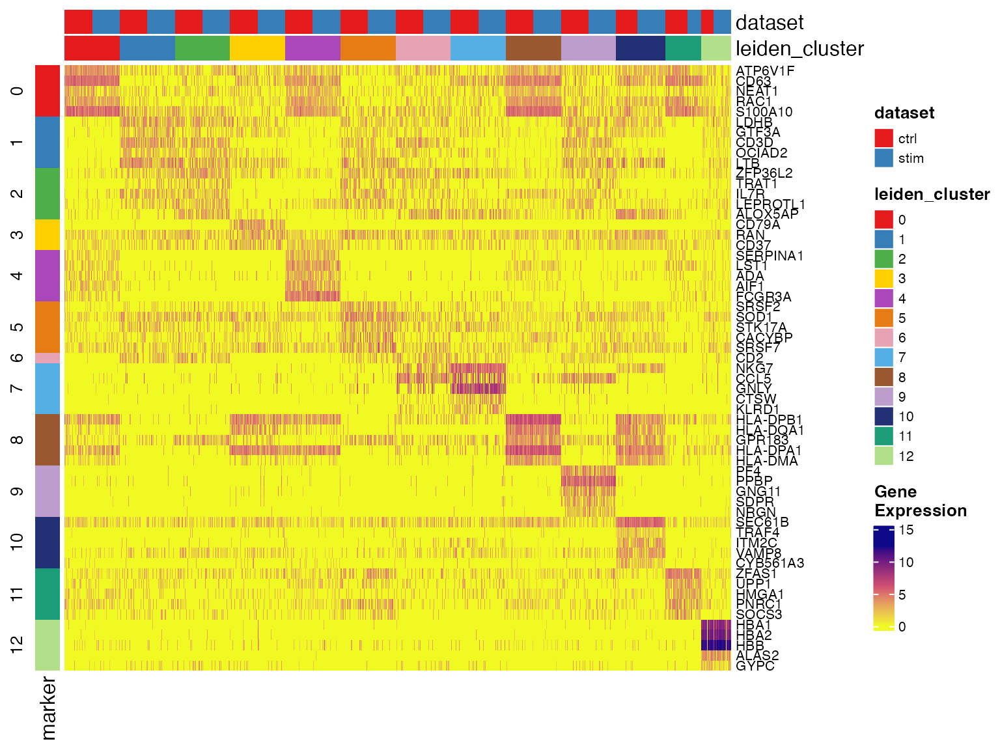
Show top markers from the table
We can also make use of the user-friendly dplyr interface to filter and sort for the top markers for each cluster.
markerTop3 <- clusterMarkerStats %>%
# Exlude insignificant result and use only up-regulated genes for each cluster
filter(padj < 0.05, logFC > 0) %>%
# Allow the following operations to be done within each cluster
group_by(group) %>%
# Sort the result by adjusted p-value ascending and logFC descending, and keep
# the sorting happening within each cluster
arrange(padj, desc(logFC), .by_group = TRUE) %>%
# Show the top three markers. Since we grouped by cluster, that's for each cluster
slice_head(n = 3)
print(markerTop3)## # A tibble: 39 × 7
## # Groups: group [13]
## feature group logFC pval padj pct_in pct_out
## <chr> <fct> <dbl> <dbl> <dbl> <dbl> <dbl>
## 1 ATP6V1F 0 2.68 0 0 93.8 40.6
## 2 CFL1 0 1.18 0 0 91.1 67.8
## 3 CD63 0 3.22 8.75e-269 2.79e-265 99.3 31.8
## 4 LDHB 1 1.97 0 0 79.7 29.8
## 5 RPL13 1 1.09 0 0 100. 98.8
## 6 RPS27A 1 0.971 5.41e-295 6.77e-292 99.9 96.3
## 7 CD2 2 1.85 9.15e-192 1.10e-188 55.7 19.3
## 8 ZFP36L2 2 1.84 1.02e-190 1.11e-187 72.2 30.4
## 9 RPL13A 2 0.879 1.06e-168 7.50e-166 99.9 98.1
## 10 CD79A 3 6.01 1.12e-272 3.35e-269 66.1 1.64
## # ℹ 29 more rowsMake dot plots for top markers
plotClusterGeneDot() function produces publication ready
dot plots for showing marker expression and expression percentage in
each cluster. Users can visualize the marker detection result from above
as well as visualizing customized marker list. Here is how we show the
detected markers for each cluster. Make sure to subset the marker stats
table to only include the top ones of each cluster, because the function
itself does not do the selection.
plotClusterGeneDot(pbmcLiger, features = markerTop3)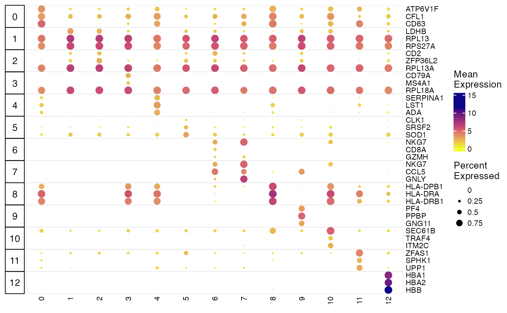
Make dot plots from custom marker list
The following code demonstrates how to make a dot plot with a custom
marker list. We suggest starting from manually writing down the
information into an R list object, for the sake of better readability.
Then we convert the list to a data.frame so that
plotClusterGeneDot() can interpret it. When we call the
plotting function, we had two additional arguments this time:
-
transposerotates the plot so that we have wider room for the cell type label (set in the marker list) to be shown -
featureTitleSizesets the font size of the cell type label.
# Write down the marker list
pbmcMarkerList <- list(
`CD14 Mono` = c("CD14", "LYZ"),
`T naive` = c("SELL", "LEF1"),
`T memory` = c("IL7R", "CCR7"),
`B` = c("MS4A1", "CD79A"),
`CD16 Mono` = c("FCGR3A", "MS4A7"),
`T activated` = c("CD69", "IL2RA"),
`CD8_T` = c("CD8A", "CD8B"),
`NK` = c("GNLY", "NKG7"),
`DC` = c("FCER1A", "CST3"),
`Mk` = c("PPBP", "ITGA2B"),
`pDC` = c("CLEC4C", "IL3RA"),
`Eryth` = c("HBB", "HBA1")
)
# Convert to acceptable data.frame format
pbmcMarkerDF <- data.frame(
gene = unlist(pbmcMarkerList, use.names = FALSE),
cell_type = factor(rep(names(pbmcMarkerList), lengths(pbmcMarkerList)),
levels = names(pbmcMarkerList))
)
# Make the plot
plotClusterGeneDot(pbmcLiger, features = pbmcMarkerDF, transpose = TRUE, featureTitleSize = 6)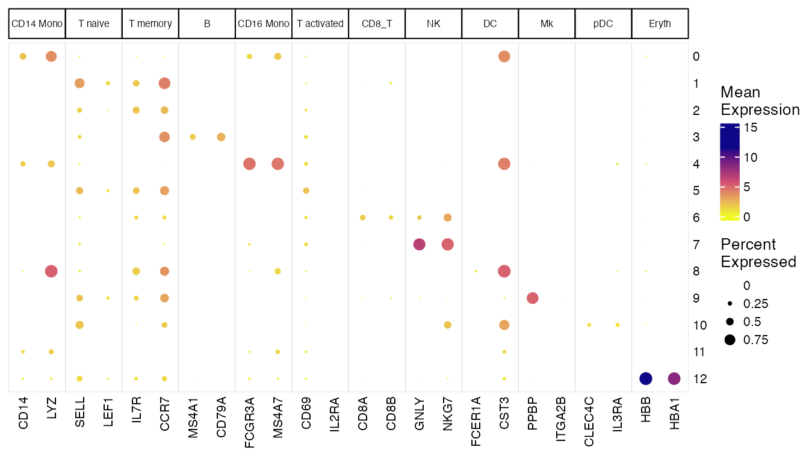
Visualize individual gene expression
We can also visualize the expression profiles of individual genes, such as the markers that we just identified. This allows us to visually confirm the cluster- or dataset-specific expression patterns of marker genes.
plotGeneDimRed() by default returns a plot of the
dimensionality reduction of all cells, colored by specified genes.
plotGeneDimRed(pbmcLiger, "GNLY")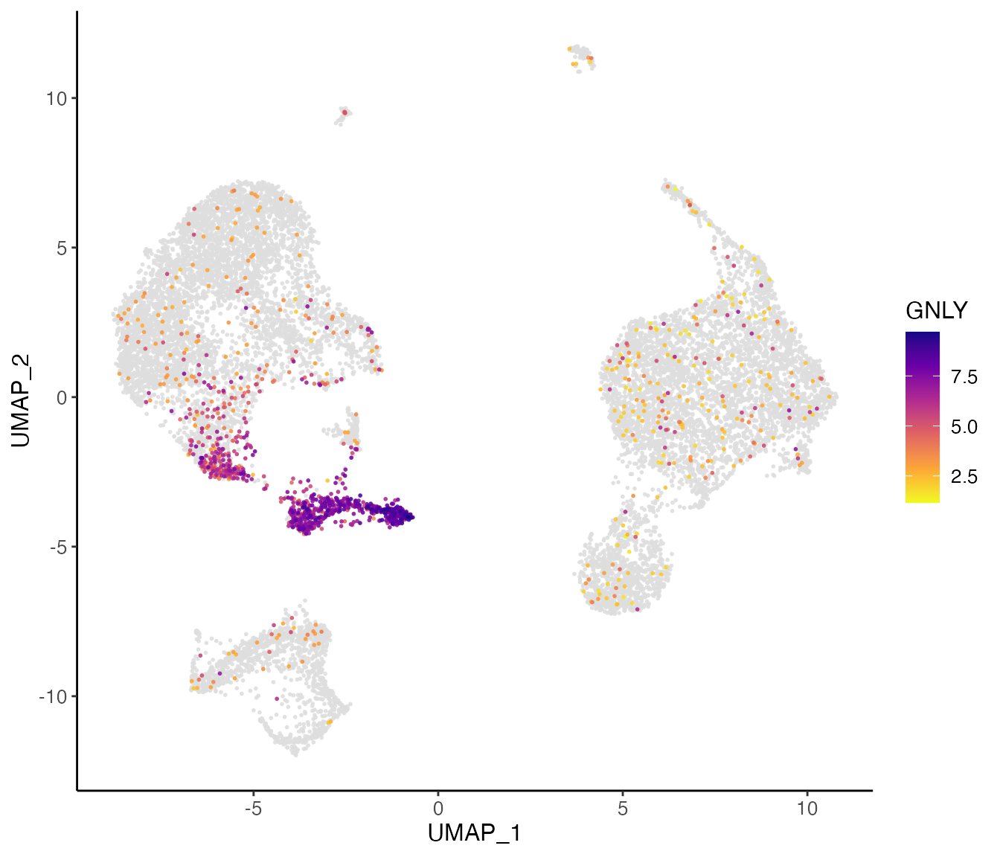
Here, we further split the plot by dataset to check if the marker expression is consistent across datasets.
# By splitting the plot by dataset, we get a list of two plots
nkg7PlotList <- plotGeneDimRed(pbmcLiger, "NKG7", splitBy = "dataset", title = names(pbmcLiger))
# Then combine them into one with cowplot function
plot_grid(plotlist = nkg7PlotList)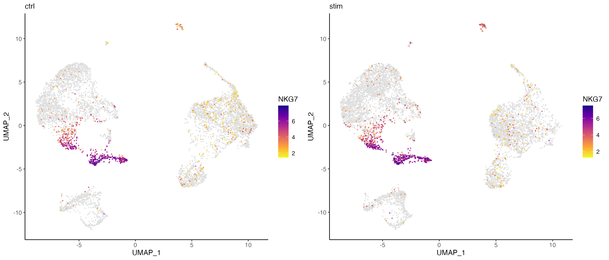
plotGeneViolin() provides a simple interface for
creating violin plots of gene expression across clusters. Users can
optionally add box plots to the plot to see the quantiles and outliers.
This function by default returns a list of plots, one for each
dataset.
GNLYviolinList <- plotGeneViolin(pbmcLiger, "GNLY", box = TRUE, colorBy = "leiden_cluster", titles = names(pbmcLiger), legendNCol = 2)
plot_grid(plotlist = GNLYviolinList, ncol = 1, align = "hv")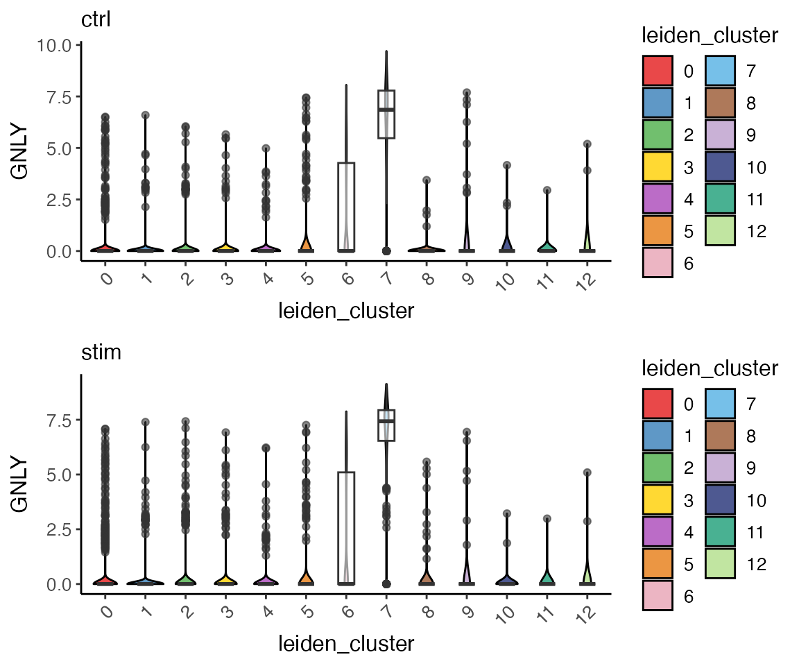
Annotate clusters by cell type names
We provide the function mapCellMeta() to assign names to
each cluster. We name the functions roughly as shown below, given the
evidence we visualized above. In real life analysis, researchers might
have been through much more work to identify the cell types and finer
sub-types.
Users need to specify from to state where to find the
cluster labels that need to be renamed, and newTo to create
a new column where the new assigned cell types will be stored. Following
these, use a cluster name as an argument and the corresponding cell type
name as the value. If a cluster is not mentioned in the call, it will be
left as it is and stored in newTo.
pbmcLiger <- mapCellMeta(
object = pbmcLiger,
from = "leiden_cluster",
newTo = "cell_type",
`0` = "CD14 Mono",
`1` = "CD4 Naive T",
`2` = "CD4 Memory T",
`3` = "B",
`4` = "CD16 Mono",
`5` = "T activated",
`6` = "CD8 T",
`7` = "NK",
`8` = "DC",
`9` = "Mk",
`10` = "pDC",
`11` = "CD14 Mono",
`12` = "Eryth"
)
plotClusterDimRed(pbmcLiger, "cell_type")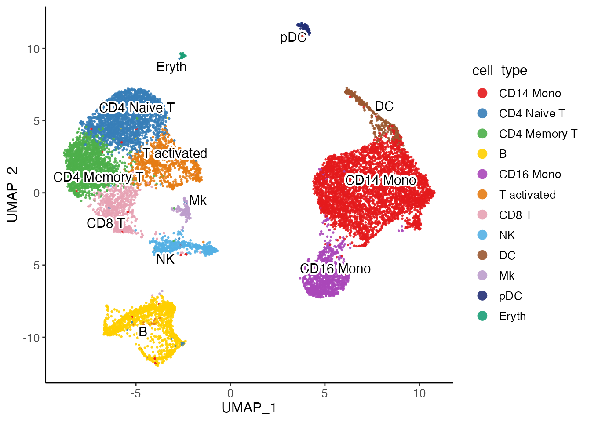
Dataset marker detection split by cluster
Additionally, by specifying conditionBy = "dataset" or
other metadata variable, the function will do one-vs-rest marker test
basing on the specified variable. So it works for dataset-specific
marker detection as well. By adding another argument
splitBy, the tes can even be done within each level of
another variable. For example,
runMarkerDEG(pbmcLiger, conditionBy = "dataset", splitBy = "leiden_cluster")
will perform the test within each cluster and find the marker for each
dataset. We skip this demonstration because the example data only
contains two datasets which is more suitable for pairwise
comparison.
Pairwise comparison between two specific conditions
In a more complexed study design than what this tutorial has, we may
have more combinations of condition, such as gender, treatment, age and
etc. Comparing the appropriate conditions helps to understand the
biological changes happening in the experiment. We introduce the
runPairwiseDEG() function for this purpose. In order to see
what changes are happening in the “stim” dataset compared to the “ctrl”
dataset, we set groupTest = "stim" and
groupCtrl = "ctrl". We need to also set
variable1 = "dataset" to allow the the group setting to be
found. We further set splitBy = "cell_type" to allow the
test to be done within each cluster, in order to under stand if the
condition effect happens within any certain cell types.
stimVsCtrlStats <- runPairwiseDEG(
pbmcLiger,
groupTest = "stim",
groupCtrl = "ctrl",
variable1 = "dataset",
splitBy = "cell_type"
)Similar to what runMarkerDEG() returns, the result table
is a combination of results. The column "group" splits the
result by the cell types, as indicated by
splitBy = "cell_type". For the slice for each cell type in
the result, the statistics are calculated by comparing
groupTest against groupCtrl, which is “stim”
against “ctrl” in this case. For downstream visualization and GO term
enrichment analysis, we can use the result table directly. The
group option from those functions requires an available
group label from this test, which can be chosen from:
groupAvail <- as.character(unique(stimVsCtrlStats$group))
print(groupAvail)## [1] "CD14 Mono.stim" "CD4 Naive T.stim" "CD4 Memory T.stim"
## [4] "B.stim" "CD16 Mono.stim" "T activated.stim"
## [7] "CD8 T.stim" "NK.stim" "DC.stim"
## [10] "Mk.stim" "pDC.stim" "Eryth.stim"Recall the compositional difference we identified in cluster 0, which is later labeled as CD14 Monocytes, here we visualize the DEG result tested within this cluster to see what genes are differentially expressed between the two datasets.
options(ggrepel.max.overlaps = 40)
plotVolcano(stimVsCtrlStats, group = "CD14 Mono.stim", labelTopN = 80, labelTextSize = 3)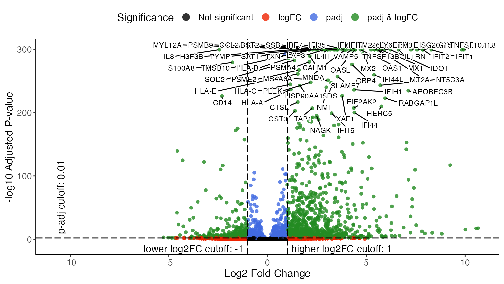
By specifying group = "CD14 Mono.stim", the function
makes a volcano plot for that test that happened within the CD14
Monocytes, and compares the “stim” dataset to the “ctrl” dataset. From
the upper-right part of the volcano plot, we can easily tell that ISGs
(Interferon-Stimulated Genes) and IFIs (Interferon-induced proteins) are
highly expressed in the CD14 monocytes from “stim” dataset compared to
those from “ctrl”, which obviously agrees with the biological context of
the experiment.
Similar to what we did in marker detection visualization, we also provide a heatmap function for pairwise DE testt. It shows the gene expression in downsampled cells involved in a specified test and divide the heatmap vertically by comparison groups and horizontally by up-/down-regulation.
plotPairwiseDEGHeatmap(pbmcLiger, result = stimVsCtrlStats, group = "CD14 Mono.stim")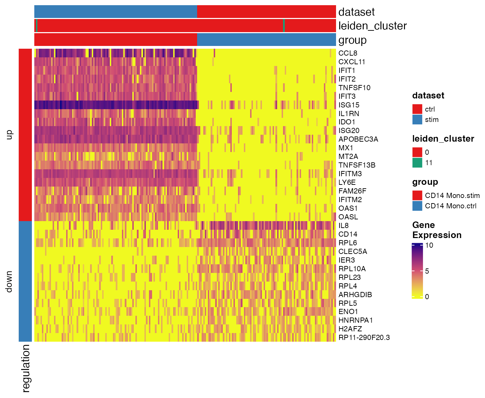
GO term enrichment analysis
After getting the differentially expressed genes, we can submit them
to tests that identify enriched GO terms. Function
runGOEnrich() wraps the functionality of gprofiler2
package and can directly be called with the returned
data.frames from the DEG functions of rliger. Note
the active internet connection is required for the function to submit
the query to gprofiler’s server.
goResult <- runGOEnrich(stimVsCtrlStats, group = "CD14 Mono.stim", splitReg = TRUE, organism = "hsapiens", evcodes = TRUE)-
splitReg = TRUErequires sending separate queries for both up- and down-regulated genes. This is helpful when working on pairwise comparisons, while specifyingsplitReg = FALSEfor marker detection makes more sense. -
organismspecifies the species for the GO term database."hsapiens"for human and"mmusculus"for mouse. -
evcodes = TRUEis optional. It requests the overlapping genes between the query gene set and each term. This is by default not turned on because it slows down the analysis. If set, an additional column"intersection"will be added to the result table.
If the input DE analysis result consists of multiple tests
(e.g. split by cluster, as we did above, or marker detection), the
returned result would be a list for each test group. Each element would
be an individual GO enrichment analysis result, represented as a list of
one data.frame for the statistics
(goResult$group_name$result) and one list for meta
information used by gprofiler2
(goResult$group_name$meta). Here we simply use
dplyr expression to show the enriched GO terms from the
up-regulated genes in the comparison of “stim” against “ctrl”, within
CD14 monocytes.
goResult[["CD14 Mono.stim"]]$result %>%
filter(query == "Up", startsWith(term_id, "GO")) %>%
arrange(p_value) %>%
select(query, term_name, term_id, p_value, intersection, term_size, intersection_size)And similarly, show the GO terms enriched within the down-regulated genes.
goResult[["CD14 Mono.stim"]]$result %>%
filter(query == "Down", startsWith(term_id, "GO")) %>%
arrange(p_value) %>%
select(query, term_name, term_id, p_value, intersection, term_size, intersection_size)Here’s also a simple visualization function that generates a dot plot
per test, with dot size representing the interaction size between query
gene set and each term, and color representing the significance of the
term. Use group = "CD14 Mono.stim" to specify the test
group, and query = "Up" or query = "Down" to
specify the if the test uses up- or down-regulated genes,
respectively.
plotGODot(goResult, group = "CD14 Mono.stim", query = "Up")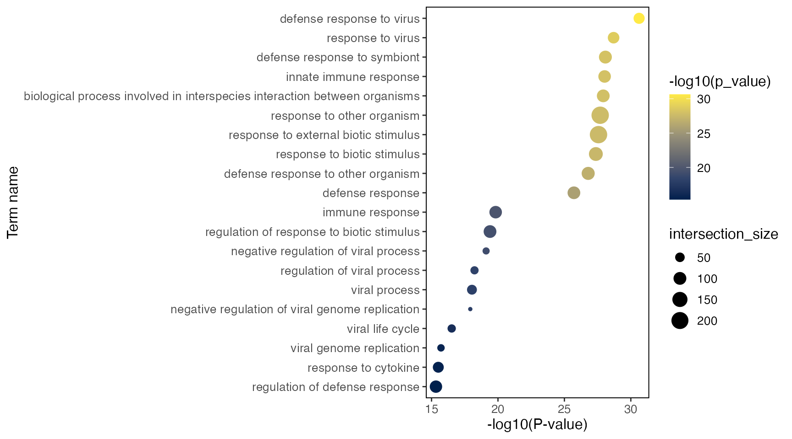
plotGODot(goResult, group = "CD14 Mono.stim", query = "Down")
R Session Info
## R version 4.4.0 (2024-04-24)
## Platform: aarch64-apple-darwin20
## Running under: macOS Sonoma 14.5
##
## Matrix products: default
## BLAS: /Library/Frameworks/R.framework/Versions/4.4-arm64/Resources/lib/libRblas.0.dylib
## LAPACK: /Library/Frameworks/R.framework/Versions/4.4-arm64/Resources/lib/libRlapack.dylib; LAPACK version 3.12.0
##
## locale:
## [1] en_US.UTF-8/en_US.UTF-8/en_US.UTF-8/C/en_US.UTF-8/en_US.UTF-8
##
## time zone: America/Detroit
## tzcode source: internal
##
## attached base packages:
## [1] stats graphics grDevices utils datasets methods base
##
## other attached packages:
## [1] cowplot_1.1.3 dplyr_1.1.4 rliger_2.1.0
##
## loaded via a namespace (and not attached):
## [1] bitops_1.0-9 gridExtra_2.3
## [3] rlang_1.1.4 magrittr_2.0.3
## [5] clue_0.3-65 GetoptLong_1.0.5
## [7] RcppAnnoy_0.0.22 matrixStats_1.4.1
## [9] compiler_4.4.0 sccore_1.0.5
## [11] gprofiler2_0.2.3 png_0.1-8
## [13] systemfonts_1.1.0 vctrs_0.6.5
## [15] pkgconfig_2.0.3 shape_1.4.6.1
## [17] crayon_1.5.3 fastmap_1.2.0
## [19] magick_2.8.3 XVector_0.44.0
## [21] labeling_0.4.3 utf8_1.2.4
## [23] rmarkdown_2.28 UCSC.utils_1.0.0
## [25] ragg_1.3.2 purrr_1.0.2
## [27] xfun_0.48 zlibbioc_1.50.0
## [29] cachem_1.1.0 GenomeInfoDb_1.40.0
## [31] jsonlite_1.8.9 highr_0.11
## [33] DelayedArray_0.30.1 BiocParallel_1.38.0
## [35] cluster_2.1.6 irlba_2.3.5.1
## [37] parallel_4.4.0 R6_2.5.1
## [39] bslib_0.8.0 RColorBrewer_1.1-3
## [41] leidenAlg_1.1.3 GenomicRanges_1.56.0
## [43] jquerylib_0.1.4 scattermore_1.2
## [45] Rcpp_1.0.13 SummarizedExperiment_1.34.0
## [47] iterators_1.0.14 knitr_1.48
## [49] IRanges_2.38.0 Matrix_1.7-0
## [51] igraph_2.0.3 tidyselect_1.2.1
## [53] rstudioapi_0.16.0 abind_1.4-8
## [55] yaml_2.3.10 viridis_0.6.5
## [57] doParallel_1.0.17 codetools_0.2-20
## [59] lattice_0.22-6 tibble_3.2.1
## [61] Biobase_2.64.0 withr_3.0.1
## [63] evaluate_1.0.1 desc_1.4.3
## [65] isoband_0.2.7 circlize_0.4.16
## [67] pillar_1.9.0 MatrixGenerics_1.16.0
## [69] DT_0.33 foreach_1.5.2
## [71] stats4_4.4.0 plotly_4.10.4
## [73] generics_0.1.3 RCurl_1.98-1.14
## [75] S4Vectors_0.42.0 ggplot2_3.5.1
## [77] munsell_0.5.1 scales_1.3.0
## [79] glue_1.8.0 lazyeval_0.2.2
## [81] tools_4.4.0 data.table_1.16.2
## [83] locfit_1.5-9.9 RANN_2.6.2
## [85] fs_1.6.4 Cairo_1.6-2
## [87] grid_4.4.0 tidyr_1.3.1
## [89] crosstalk_1.2.1 colorspace_2.1-1
## [91] GenomeInfoDbData_1.2.12 cli_3.6.3
## [93] textshaping_0.4.0 fansi_1.0.6
## [95] S4Arrays_1.4.0 viridisLite_0.4.2
## [97] ComplexHeatmap_2.20.0 uwot_0.2.2
## [99] gtable_0.3.5 DESeq2_1.44.0
## [101] sass_0.4.9 digest_0.6.37
## [103] BiocGenerics_0.50.0 RcppPlanc_1.0.0
## [105] SparseArray_1.4.3 ggrepel_0.9.6
## [107] rjson_0.2.21 htmlwidgets_1.6.4
## [109] farver_2.1.2 memoise_2.0.1
## [111] htmltools_0.5.8.1 pkgdown_2.0.9
## [113] lifecycle_1.0.4 httr_1.4.7
## [115] GlobalOptions_0.1.2 MASS_7.3-60.2